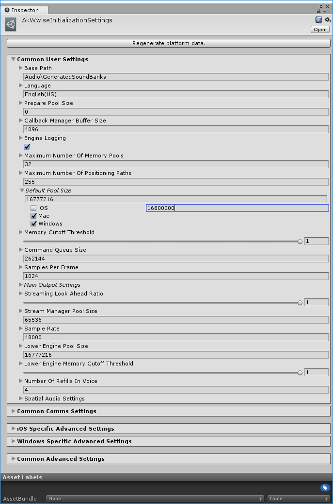

首页
类
Wwise Unity 集成
»
Previous Release Notes
»
版本说明 - Wwise Unity Integration 2018.1.0.6714.1154
新功能 2018.1
在 Wwise 2018.1 和它的 Unity 集成中有许多重要的新功能。新功能包含以下几点：
Unity Editor 中整合了性能分析器使用的通信设置。
现在可在 Unity Integration 中设置 APU 堆大小。
新增了 C# WAAPI Client 类，便于用户自行编写脚本，并通过 WAAPI 与 Wwise 设计工具进行通信。
现在可在 Unity Editor 中针对各个平台定义 Wwise 初始化设置（定义各个内存池大小）。

Generated at Tue Jan 29 11:48:54 2019 for Wwise Unity Integration by
1.6.3